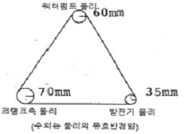
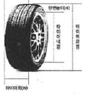

자동차정비기능사 (2010-07-11 기출문제)
1과목: 자동차공학
1. 디젤노크를 방지하기 위한 방법이 아닌 것은?
- 착화성이 좋은 연료를 사용한다.
- 압축비가 높은 기관을 사용한다.
- 분사초기의연료분사량을 많게 하고 착화 후기 분사량을 줄인다.
- 연소실 내의 와류를 증가시키는 구조로 만든다.
(정답률: 71%)

2. 4행정 기관에서 흡기밸브의 열림각은 242˚, 배기밸브의 열림 각은 274˚, 흡기 밸브의 열림 시작점은 BTDC13˚,배기밸브의 닫힘 점은 ATDC16˚ 이었을 때 흡기밸브의 닫힘 시점은?
- ABDC 20˚
- ABDC 37˚
- ABDC 42˚
- ABDC 49˚
(정답률: 51%)
3. 자동차 배기가스 중 광화학 스모그를 발생시키는 원인이 되는 것은?
- 질소산화물
- 일산화탄소
- 이산화탄소
- 탄소
(정답률: 76%)
4. 맵(MAP)센서는 무엇을 측정하는 센서인가?
- 매니폴드 절대 압력을 측정
- 매니폴드 내의 공기변동을 측정
- 매니폴드 내의 온도 감지
- 매니폴드 내의 대기 압력을 흡입
(정답률: 69%)
5. 가솔린 200cc를 연소시키기 위해 몇 kgf의 공기가 필요한가?(단,혼합비는 15:1이고,가솔린의 비중은0.73이다.)
- 2.19kgf
- 3.42kgf
- 4.14kgf
- 5.63kgf
(정답률: 38%)
6. 1마력은 매초 몇 cal의 발열량에 상당하는가?
- 약 32cal/s
- 약 64cal/s
- 약 176cal/s
- 약 32025cal/s
(정답률: 60%)
7. 기관의 회전력이 0.72kgf.m회전수가 5000rpm일 때 제동마력은 약 얼마인가?
- 2ps
- 5ps
- 8ps
- 10ps
(정답률: 56%)
8. 2행정 사이클이 디젤기관에서 항상 한 방향의 소기류가 일어나고 소기효율이 높아 소형 고속 디젤기관에 적합한 소기법은?
- 단류소기법
- 루프소기법
- M.A.N소기법
- 횡단 소기법
(정답률: 71%)
9. 과급기에서 공기의 속도 에너지를 압력 에너지로 바꾸는 장치는?
- 디플렉터(Deflecter)
- 터빈(Turbine)
- 디퓨저(Defuser)
- 루트 슈퍼 차져(lootsupercharger)
(정답률: 62%)
10. 가솔린기관에서 MPI시스템의 인젝터 점검방법으로 가장거리가 먼 것은?
- 솔레노이드 코일의 저항점검
- 인젝터의 리턴 연료량 점검
- 인젝터의 작동음
- 인젝터의 연료분사량
(정답률: 44%)
11. 전자제어식 기관의 공회전 상태 제어용 입력 정보에 해당하지 않은 것은?
- 기관 회전속도
- 수온센서
- 자동 변속기의 부하신호
- 차속센서
(정답률: 51%)
12. 산소센서 출력전압에 영향을 주는 요소가 아닌 것은?
- 혼합비
- 흡입공기온도
- 산소센서의 온도
- 배기가스 중의 산소잔존량
(정답률: 49%)
13. 전자제어 엔진에서 전동 팬 작동에 관한 내용으로 가장 부적합 것은?
- 전동 팬의 작동은 엔진의 수온센서에 의해 작동된다.
- 전동 팬은 릴레이를 통하여 작동된다.
- 전동 팬 릴레이 형식은NO(normalopen)와 NC(normalclosed)두 가지이다.
- 전동 팬 고장 시 블로워 모터로 기관을냉각 시킬 수 있다.
(정답률: 69%)
14. O2센서(지르코니아 방식)의 출력 전압이 1V 에 가깝게 나타나면 공연비가 어떤 상태인가?
- 희박하다
- 농후하다
- 공연비가 14.7 : 1에 가깝다는 것을 나타낸다.
- 농후하다가 희박한 상태로 되는 경우이다.
(정답률: 65%)
15. 전자제어 가솔린 엔진에서 T.P.S점검방법 중 틀린 것은?
- 전압 측정
- 전류 측정
- 저항 측정
- 스캐너를 이용한 측정
(정답률: 43%)
16. 기관의 실린더헤드 볼트를 규정 토크로조이지 않았을 경우에 발생되는 현상과 거리가 먼 것은?
- 냉각수가 실린더에 유입된다.
- 압축압력이 낮아질 수 있다.
- 엔진오일이 냉각수와 섞인다.
- 압력저하로 인한 피스톤이 과열한다.
(정답률: 71%)
17. 가솔린 전자제어 기관의 흡입공기량센서의 약어는?
- ATS
- BPS
- AFS
- ISC
(정답률: 76%)
18. 디젤기관의 분사량 제어 기구에서 분사량을 제어하기 까지의 운동 전달 순서로 맞는 것은?
- 가속페달(가버너)→ 제어래크 → 제어슬리브 → 플런저 → 제어피니언
- 가속페달(가버너)→ 제어래크 → 제어피니언 → 제어슬리브 → 플런저
- 가속페달(가버너)→ 플런저→ 제어피니언 → 제어슬리브 → 제어래크
- 가속페달(가버너)→ 제어슬리브 → 제어피니언 →제어래크 → 플런저
(정답률: 66%)
19. 그림에서 크랭크축 풀리의 회전속도가 600rpm일 때 발전기 풀리의 회전속도는?(단,풀리와 벨트사이의 미끄럼은 무시한다.)

- 200rpm
- 300rpm
- 800rpm
- 1200rpm
(정답률: 48%)
20. 자동차 전조등주광축의 진폭 측정시 10m위치에서 우측 우향진폭 기준은 몇cm이내 이어야 하는가?
- 10
- 20
- 30
- 39
(정답률: 64%)
2과목: 자동차정비 및 안전기준
21. 연료펌프 라인에 고압이 걸릴 경우 연료의 누출이나 연료배관이 파손되는 것을 방지하는 것은?
- 사일렌서(silencer)
- 체크 밸브(checkvalve)
- 안전 밸브(reliefvalve)
- 축압기(acccumulator)
(정답률: 79%)
22. 내연기관의 열손실을 측정하였더니 냉각수에 의한 손실이 35%,배기 및 복사에 의한 손실이 25%,기계 효율이 90%라면 제동열효율은 몇 %인가?
- 40%
- 36%
- 31%
- 25%
(정답률: 57%)
23. 기관에서 윤활의 목적이 아닌 것은?
- 마찰과 마멸감소
- 응력집중작용
- 밀봉작용
- 세척작용
(정답률: 73%)
24. 드라이브 라인에서 추진축의 구조 및 설명에 대한 내용으로 틀린 것은?
- 길이가 긴 추진축은 플랙시블 자재이음을 사용한다.
- 길이와 각도변화를 위해 슬립이음과 자재 이음을 사용한다.
- 사용회전속도에서 공명이 일어나지 않아야 한다.
- 회전시 평형을 유지하기 위해 평행추가 설치 되어 있다.
(정답률: 56%)
25. 자동변속기에서 토크 컨버터내의 록업클러치(댐퍼클러치)의 작동조건으로 거리가 먼 것은?
- D레인지에서 일정 차속이상 일 때(약 70Km/h정도)
- 냉각수 온도가 충분히 올랐을 때(약 75° 정도)
- 브레이크 페달을 밟지 않을 때
- 발진 및 후진 시
(정답률: 66%)
26. 유압식 제동장치에서 제동 시 제동력 상태가 불량 할 경우고장 원인으로 거리가 먼 것은?
- 브레이크액의 누설
- 브레이크슈 라이닝의 과대마모
- 브레이크액 부족 또는 공기 유입
- 비등점이 높은 브레이크액 사용
(정답률: 80%)
27. 조향 핸들이 1회전할 때 피트먼암은 36° 움직인다면 조향 기어비는?
- 1 : 1
- 10 : 1
- 5 : 1
- 15 : 1
(정답률: 77%)
28. 전자제어 현가장치의 기능으로 틀린 것은?
- 스프링 상수와 감쇄력 제어
- 차량 높이제어
- 급제동시 바퀴 고착방지
- 차량 자세제어
(정답률: 66%)
29. 클러치 페달 유격 및 디스크에 대한 설명으로 틀린 것은?
- 페달 유격이 작으면 클러치가 미끄러진다.
- 페달의 리턴 스프링이 약하면 동력차단이 불량하게 된다.
- 클러치판에 오일이 묻으면 미끄럼의 원인이 된다.
- 페달 유격이 크면 클러치 끊김이 나빠진다.
(정답률: 41%)
30. 전자제어 제동장치(ABS)의 구성요소 틀린 것은?
- 휠 스피드 센서(wheelspeedsensor)
- 컨트롤 유닛(controlunit)
- 하이드로릭 유닛(hydraulicunit)
- 크랭크 앵글 센서(crankanglesensor)
(정답률: 77%)
31. 타이어 폭이 180(mm)이고 타이어 단면 높이가 90(mm)이면 편평비(%)는?

- 500%
- 50%
- 600%
- 60%
(정답률: 74%)
32. 현가장치에서 판스프링의 구조에 대한 내용으로 거리가 먼 것은?
- 스팬(span)
- 유(u)볼트
- 스프링 아이(springeye)
- 너클(knuckle)
(정답률: 58%)
33. 차륜정렬에서 토인의 조정은 무엇으로 할 수 있는가?
- 시임의 두께
- 와셔의 두께
- 드래그랭크의 길이
- 타이로드의 길이
(정답률: 84%)
34. 동력조향장치가 고장시 핸들을 수동으로 조작 할 수 있도록 하는 것은?
- 오일 펌프
- 파워 실린더
- 안전 체크밸브
- 시프트 레버
(정답률: 64%)
35. 공기식 브레이크장치의 구조와 거리가 먼 것은?
- 하이드로 에어백
- 릴레이 밸브
- 브레이크 챔버
- 브레이크 밸브
(정답률: 64%)
36. 수동변속기 내부에서 싱크로나이저링의 기능이 작동하는 시기는?
- 변속기 내에서 기어가 빠질 때
- 변속기 내에서 기어가 물릴 때
- 클러치 페달을 밟을 때
- 클러치 페달을 놓을 때
(정답률: 81%)
37. 전자제어 구동력 조절장치(TCS)에서 컨트롤 유닛에 입력되는 신호가 아닌 것은?
- 스로틀 포지션센서
- 브레이크 스위치
- 휠 속도센서
- TCS구동 모터
(정답률: 42%)
38. 전자제어 자동 변속기차량에서 컨트롤유닛(TCU)의 입력 신호 중 기본 변속기제어 요소는?
- 스로틀포지션 센서와 차속센서
- 공기유량 센서와 차속센서
- 인히비터 스위치와 시프트솔레노이드 밸브
- 유온센서와 펄스제네레이터
(정답률: 69%)
39. 유압식 브레이크장치의 공기빼기 작업방법으로 틀린 것은?
- 공기는 블리더 플러그에서 뺀다.
- 마스터실린더에서 먼 곳의 휠 실린더부터 작업한다.
- 마스터실린더에 브레이크액을 보충하면서 작업한다.
- 브레이크 파이프를 빼면서 작업한다.
(정답률: 64%)
40. 자동변속기에서유성기어 장치의 구성요소가 아닌 것은?
- 유성 기어 캐리어
- 링기어
- 변속기어
- 선기어
(정답률: 61%)
3과목: 안전관리
41. 12V-100A의 발전기에서 나오는 출력은?
- 1.73PS
- 1.63PS
- 1.53PS
- 1.43PS
(정답률: 54%)
42. 정상적인 12V축전지인 경우,크랭킹 시 일반적인 전압은?
- 약 20~23V
- 약 15~18V
- 약 9~11V
- 약 5~7V
(정답률: 59%)
43. 12V,5W전구 1개와 24V,60W전구1개를 12V 배터리에 직렬로 연결하였다.옳은 것은?
- 양쪽 전구가 똑같이 밝다.
- 5W전구가 더 밝다.
- 60W전구가 더 밝다.
- 5W전구가 끊어진다.
(정답률: 62%)
44. 기동 전동기의 피니언과 링기어의 물림 방식에 속하지 않는 것은?
- 피니언 섭동식
- 벤딕스니식
- 전기자 섭동식
- 유니버셜식
(정답률: 52%)
45. 점화스위치의 IG회로와 연결되지 않는 것은?
- 기동 전동기
- 점화코일의 1차
- 인젝터
- 크랭크 앵글센서
(정답률: 40%)
46. 냉방장치의 증기압축 냉동 사이클 시스템에서 액체가 기체로 상태변화 할 때 주변의 열을 흡수하는 반응을 이용한 부품은?(오류 신고가 접수된 문제입니다. 반드시 정답과 해설을 확인하시기 바랍니다.)
- 압축기와 응축기
- 응축기와 어큐뮬레이터
- 리시버 드라이어와 어큐뮬레이터
- 증발기와 팽창밸브
(정답률: 46%)
47. 자동차용 퓨즈의단선원인과 가장거리가 먼 것은?
- 회로의 합선에 의해 과도한 전류가 흘렀을 때
- 퓨즈가 부식되었을 때
- 퓨즈가 접촉이 불량할 때
- 용량이 큰 퓨즈로 교체하였을 때
(정답률: 82%)
48. 편의장치 중 중앙집중식 제어장치(ETACS또는ISU)의 입출력요소의 역할에 대한 설명 중 틀린 것은?
- 모든 도어스위치 : 각 도어 잠김 여부감지
- INT수위치 : 와셔 작동 여부 감지
- 핸들 록 수위치 : 키 삽입 여부 감지
- 열선스위치 : 열선 작동 여부 감지
(정답률: 76%)
49. 전조등 회로의 구성부품이 아닌 것은?
- 라이트 스위치
- 전조등 릴레이
- 스테이터
- 딤머 스위치
(정답률: 78%)
50. 단방향 3단자 사이리스터(SRC)에 대한 설명 중 틀린 것은?
- 애노드(A),캐소드(K),게이트(G)로 이루어 진다.
- 캐소드에서 게이트로 흐르는 전류가 순방향 이다.
- 게이트에 (+),캐소드에(-)전류를 흘려보내면 애노드와 캐소드 사이가 순간적으로 도통된다.
- 애노드와 캐소드 사이가 도통된 것은 게이트 전류를 제거해도 계속 도통이 유지되며,애노드 전위를 0으로 만들어야 해제된다.
(정답률: 44%)
51. 안전장치 선정 시 고려사항 중 맞지 않는 것은?
- 안전장치의 사용에 따라 방호가 완전할 것
- 안전장치의 기능 면에서 신뢰도가 클 것
- 정기 점검시 이외에는 사람의 손으로 조정할 필요가 없을 것
- 안전장치를 제거하거나 또는 기능의 정지를 용이하게 할 수 있을 것
(정답률: 69%)
52. 회로의 정격 전압이 일정수준 이하의 낮은 전압으로 절연 파괴등의 사고에도 인체에 위험을 주지 않게 되는 전압을 무슨 전압이라 하는가?
- 안전전압
- 접촉전압
- 접지전압
- 절연전압
(정답률: 72%)
53. 연소의 3요소에 해당 되지 않는 것은?
- 물
- 공기(산소)
- 점화원
- 가연물
(정답률: 82%)
54. 얇은 판에 드릴작업시 재료 밑의 받침은 무엇이 적합한가?
- 나무판
- 연강판
- 스테인레스판
- 벽돌
(정답률: 74%)
55. 안전․@보건표지의 종류와 형태에서 다음 그림이 나타내는 것은?
- 인화성물질경고
- 폭발성물질경고
- 금연
- 화기금지
(정답률: 81%)
56. 작업장에서 중량물 운반수레의 취급시 안전사항으로 틀린 것은?
- 적재중심은 가능한 한 위로 오도록 한다.
- 화물이 앞뒤 또는 측면으로 편중되지 않도록 한다.
- 사용 전 운반수레의 각부를 점검한다.
- 앞이 안 보일 정도로 화물을 적재하지 않는다.
(정답률: 86%)
57. 정비작업상 안전수칙의 설명으로 틀린 것은?
- 정비작업을 위하여 차를 받칠 때는 안전잭이나 고임목으로 고인다.
- 노즐시험기로 분사노즐상태를 점검할 때는 분사되는 연료에 손이 닿지 않도록 해야 한다.
- 알칼리성 세척유가 눈에 들어갔을 때는 먼저 알칼리유로 씻어 중화한 뒤 깨끗한 물로 씻는다.
- 기관 시동시에는 소화기를 비치해야한다.
(정답률: 81%)
58. 정밀한 부속품을 세척하기 위한 방법으로 가장 안전한 것은?
- 와이어브러시를 사용한다.
- 걸레를 사용한다.
- 솔을 사용한다.
- 에어건을 사용한다.
(정답률: 80%)
59. 축전지의 점검 및 취급시 지켜야할 사항으로 틀린 것은?
- 전해액이 옷이나 피부에 닿지 않도록 한다.
- 충전기로 충전할 때에는 극성에 주의한다.
- 축전지의 단자전압은 교류전압계로 측정한다.
- 전해액 비중 점검결과 방전되었으면 보충전 한다.
(정답률: 67%)
60. 기관오일의 보충 또는 교환시 가장 주의 할 점으로 옳은 것은?
- 점도가 다른 것은 서로 섞어서 사용하지 않는다.
- 될 수 있는 한 많이 주유한다.
- 소량의 물이 섞여도 무방하다.
- 제조회사가 관계없이 보충한다.
(정답률: 79%)